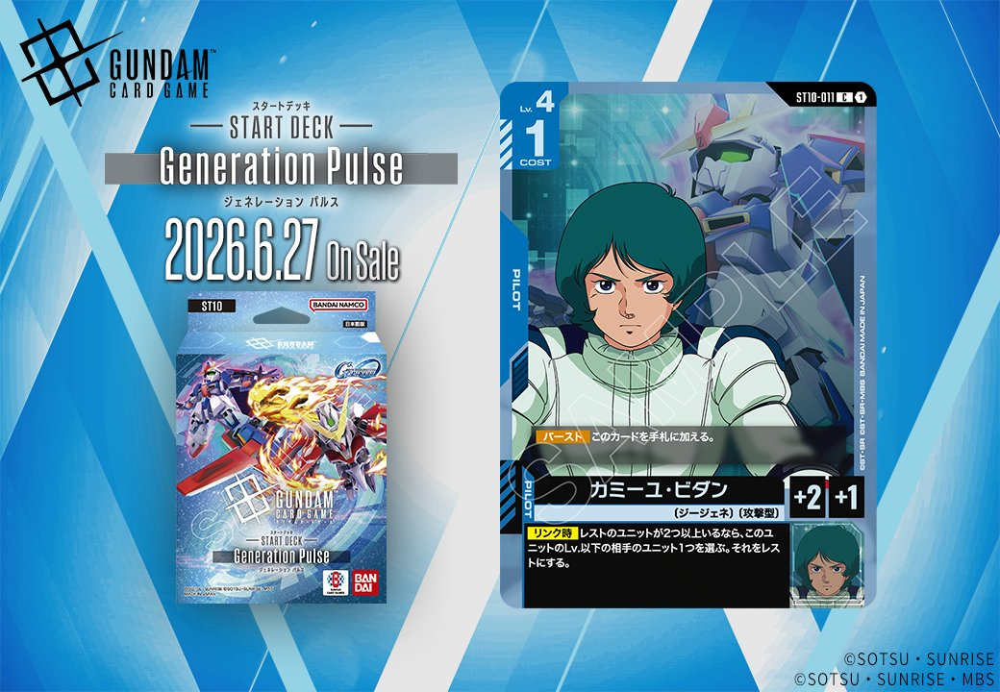
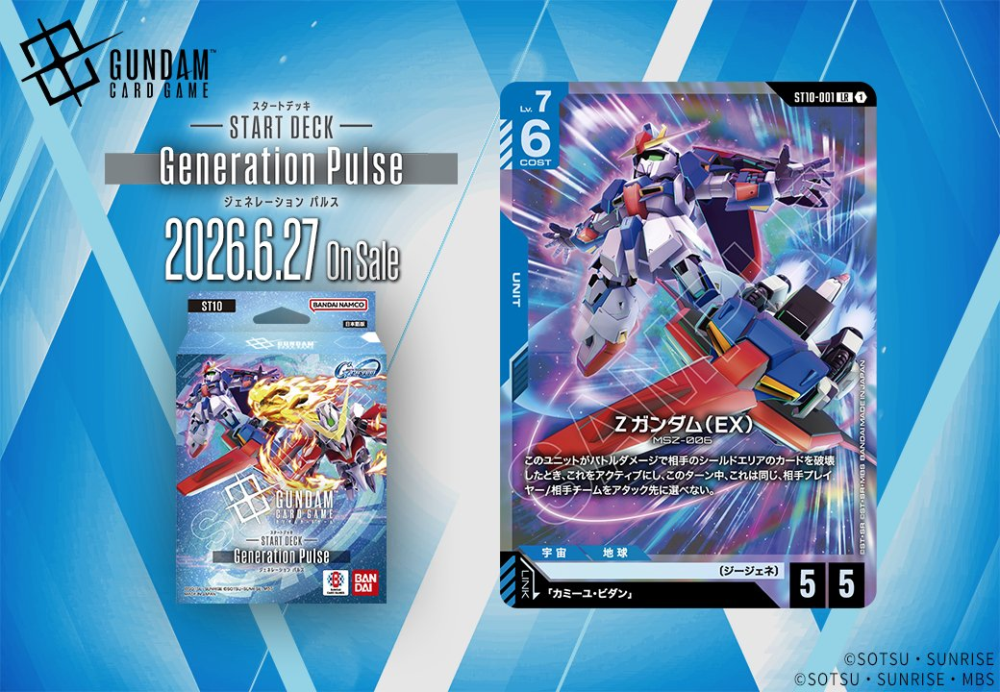

2026年6月27日発売予定のスターターデッキ「Generation Pulse」(ST10)から、リンク条件で結ばれる2枚のカードが同時公開されました。青のUNIT「Zガンダム (EX)」(ST10-001)は「カミーユ・ビダン」をリンク条件とし、青のPILOT「カミーユ・ビダン」(ST10-011)と組み合わせることで、スターターデッキならではの明確なリンクシナジーを形成します。

カミーユ・ビダン (ST10-011)
| 色 | 青 | タイプ | PILOT |
| Lv | 4 | コスト | 1 |
| 補正 AP | 2 | 補正 HP | 1 |
| 特徴 | 〔ジージェネ〕、〔攻撃型〕 | ||
効果: 【バースト】このカードを手札に加える。【リンク時】レストのユニットが2つ以上いるなら、このユニットのLv.以下の相手のユニット1つを選ぶ。それをレストにする。
カミーユ・ビダン (ST10-011)は【バースト】で手札に加えられ、【リンク時】にレストユニットが2つ以上いればLv.4以下の相手ユニットをレストにできる青のパイロット。同日公開のZガンダム (EX)とリンクすることで、Zガンダムのバトルダメージによるシールド破壊→アクティブ化の流れをサポートし、相手の防御ユニットをレストして攻撃を通しやすくする運用が可能。コスト1と軽量で、レスト条件は自分・相手問わず満たせるため、中盤以降の盤面コントロールに貢献できそうだ。


Zガンダム (EX) (ST10-001)
| 色 | 青 | タイプ | UNIT |
| Lv | 7 | コスト | 6 |
| AP | 5 | HP | 5 |
| 特徴 | 〔ジージェネ〕 | ||
| リンク条件 | 「カミーユ・ビダン」 | ||
効果: このユニットがバトルダメージで相手のシールドエリアのカードを破壊したとき、これをアクティブにし、このターン中、これは同じ相手プレイヤー/相手チームをアタック先に選べない。
Zガンダム(EX)はLv.7/コスト6/AP5/HP5と高レベル帯のステータスを持つ青のユニット。バトルダメージで相手シールドを破壊時にアクティブになり追加アタックが可能だが、同一ターン中は同じプレイヤーへの再アタックは不可という制限付き。 同日公開のパイロット「カミーユ・ビダン」とリンクすることで、レストユニットが2体以上いれば相手ユニット1体をレストにできるため、バトルを有利に進めやすくなる。チーム戦やバトルロワイヤルでは別の相手プレイヤーへ連続アタックが可能で、多人数戦での制圧力が高い1枚。

関連カード
-
 ハロ(EB01-017)NEW青系 — 同色・共通特徴: ジージェネ（新カード）
ハロ(EB01-017)NEW青系 — 同色・共通特徴: ジージェネ（新カード） -
 開発経路図の解放(ST10-014)NEW青系 — 同色・共通特徴: ジージェネ（新カード）
開発経路図の解放(ST10-014)NEW青系 — 同色・共通特徴: ジージェネ（新カード） -
 ルーナ・マナ&キャリー・ベース(ST10-016)NEW青系 — 同色・共通特徴: ジージェネ（新カード）
ルーナ・マナ&キャリー・ベース(ST10-016)NEW青系 — 同色・共通特徴: ジージェネ（新カード） -
 フルアーマー・ガンダム(サンダーボルト版)(EX)(EB01-009)NEW青系 — 同色・共通特徴: ジージェネ（新カード）
フルアーマー・ガンダム(サンダーボルト版)(EX)(EB01-009)NEW青系 — 同色・共通特徴: ジージェネ（新カード） -
 スーパーガンダム(ST10-004)NEW青系 — 同色・共通特徴: ジージェネ（新カード）
スーパーガンダム(ST10-004)NEW青系 — 同色・共通特徴: ジージェネ（新カード） -
カミーユ・ビダン(ST10-011)NEW青系 — リンク先（新カード）
-
 カミーユ・ビダン(GD02-097)白系デッキ内採用率0.2% (3デッキ)
カミーユ・ビダン(GD02-097)白系デッキ内採用率0.2% (3デッキ) -
 カミーユ・ビダン(GD02-097_p1)白系デッキ内採用率0% (0デッキ)
カミーユ・ビダン(GD02-097_p1)白系デッキ内採用率0% (0デッキ) -
 カミーユ・ビダン(GD02-097_p2)白系デッキ内採用率0% (0デッキ)
カミーユ・ビダン(GD02-097_p2)白系デッキ内採用率0% (0デッキ)